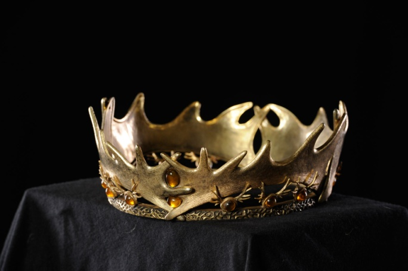

<ion-view>
  <ion-content>
    <h3 class="heading">Al Ain Bottled Water</h3>

    <div class="list padding">
        <ion-item style='border-color: #3ac6fe'>
    	    <h2>Al Ain Pure Natural Bottled Water</h2>
            <div class="row">
                <div class="col col-50">
                    
                    <p class="center">Unit 5ltr</p>
                    <button class="button button-icon button-clear ion-arrow-expand"></button>
                </div>
                <div class="col col-50">
                    <div class="list">
                        <label class="item item-input price-dtls">
                            <span class="input-label">Price</span>
                            <span class="input-label span1">AED11.00</span>
                        </label>
                        <label class="item item-input price-dtls">
                            <span class="input-label">Quantity</span>
                            <div class='quant-val'>
                                <!-- <button class="button button-icon button-clear ion-arrow-up-b"></button> -->
                                <input type='text'>
                                <!-- <button class="button button-icon button-clear ion-arrow-down-b"></button> -->
                            </div>
                                                        
                        </label><br>
                        <div class='cart-btn'><button class="button button-small button-positive" ng-click="location('/app/cart')">Add Cart</button></div>
                    </div>    
                </div>
            </div><br>

            <h2>Details</h2><hr>
            <p class="p-details">Natural Water Sources in the UAE do not receive sufficient replenishment, which can leave them depleted or with very high Total Dissolved Solids. Al Ain mineral mineral water company pioneered a new purification and re-mineralisation process to produce water that conforms to the strictest US Food & Drug Administration, European and Abu Dhabi Food Control Authority guidelines.</p>
            <br><p>Our state-of-the-art factory uses fully automated manufacturing</p>
        </ion-item>
    </div>
  </ion-content>
</ion-view>
